RHELM 是一篇面向长期记忆型个人 AI 助手的评测基准论文。论文入口是 arXiv:2605.31086，标题为 “Beyond Static Dialogues: Benchmarking Realistic, Heterogeneous, and Evolving Long-Term Memory”。本轮下载到的 PDF 页脚标注为 arXiv:2605.31086v2 [cs.CL] 1 Jun 2026；浏览器打开的 arXiv abstract 页面仍显示 2026-05-29 提交记录，因此这里把 PDF 视作正文事实源，同时保留这个版本显示差异。作者包括 Han Zhang、Zihao Tang、Xin Yu、Xiao Liu、Yeyun Gong、Haizhen Huang、Yan Lu、Weiwei Deng、Feng Sun、Qi Zhang 和 Hanfang Yang；PDF 首页给出的机构是中国人民大学 Center for Applied Statistics / School of Statistics，以及 Microsoft，多位作者来自 Microsoft，Han Zhang 的工作在 Microsoft 实习期间完成。代码和数据状态已核验：论文和 GitHub 都指向公开仓库 microsoft/RHELM，仓库包含 evaluation/data/docs/web 等目录，README 显示 benchmark data 可通过 HuggingFace 获取，evaluation framework 可用，generation code 计划在论文接收后释放；README 当前写 26 个复杂特征，而 PDF 正文和表格写 27 个，这属于发布文档与论文正文之间的小差异。
1. 背景和问题
长期记忆评测过去很容易被做成“长上下文检索题”：给模型一大段对话历史，再问某个早期事实在哪里。RHELM 认为这种设定离真实个人助手还差很远。真实用户不是静态角色，个人状态会因为经历持续变化；用户和助手之间也不只发生口语对话，还会围绕邮件、报告、日记、表格和网页类材料展开；更棘手的是，用户有时会提出看似正常但和自己当前状态冲突的请求，助手不能只按字面指令执行，而要调用记忆判断请求是否合适。
论文开头列出的三类缺口很直接。第一是语义一致性和行为真实性不足。很多长期记忆 benchmark 会把分散的对话片段拼成长上下文，人物本身没有稳定画像，前后行为没有真实生活轨迹，因此模型只是在做长文本定位，而不是理解一个人。第二是信息源单一。真实个人助手要处理的记忆来自对话、邮件、附件、日志、报告和表格，外部材料常常比闲聊更高密度，也更容易形成跨源冲突。第三是缺少 memory-conditioned misleading queries。用户可能说“帮我安排一个站一整晚的演唱会行程”，但历史记忆里显示他有慢性背伤并依赖手杖；这时好助手应该指出隐含冲突并给替代方案，而不是热情帮他写接受邀请。
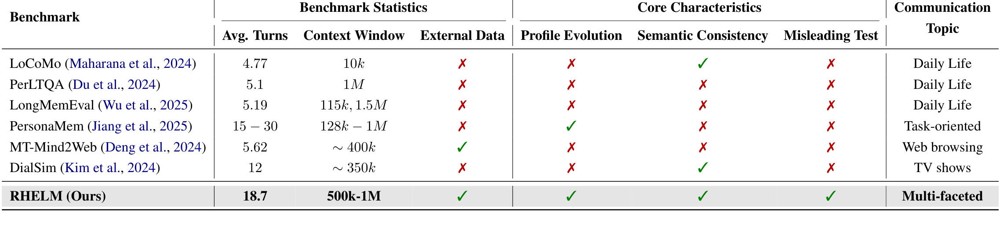
Table 1 把 RHELM 的定位说得很清楚。LoCoMo、PerLTQA、LongMemEval、PersonaMem、MT-Mind2Web、DialSim 各自覆盖了长对话、社交记忆、偏好变化、网页任务或角色扮演，但同时覆盖外部数据、profile evolution、semantic consistency 和 misleading test 的不多。RHELM 不是单纯把 context window 做到 500k-1M，而是把“用户画像会演化、对话要语义连贯、外部文件要参与记忆、问题要包含陷阱”作为基准构造条件。表中 RHELM 的 average turns 是 18.7，看起来不比某些对话 benchmark 大很多；真正拉开差距的是外部源、动态画像和 multi-faceted topic 同时存在。也就是说，RHELM 的难度来自记忆结构复杂度，而不只是对话轮数堆叠。
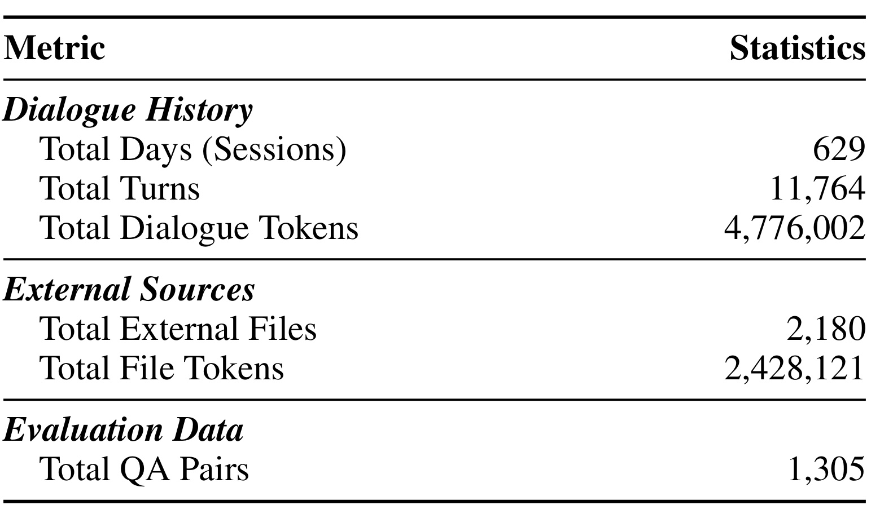
Table 2 给出主数据规模：629 个 days/sessions、11,764 个 dialogue turns、4,776,002 个 dialogue tokens、2,180 个 external files、2,428,121 个 external file tokens，以及 1,305 个 QA pairs。这个规模不算超大，但它的重点不是海量样本，而是每个 persona 的长期轨迹在 500k 到 1M tokens 范围内持续展开。换句话说，RHELM 测的是“在漫长、混杂、动态的人生记忆中找对事实并判断状态”，不是只测一个模型能不能把百万 token 塞进窗口。
从 LLM 研究角度看，这篇论文的价值在于把长期记忆问题从“检索命中率”推进到“记忆语境管理”。一个系统可能有很长上下文，也可能有向量检索和 memory store，但如果它不能区分事件时间、不能识别某个事实来自对话还是附件、不能更新用户状态、不能拒绝与当前状态冲突的请求，那么它仍然不是合格的 personal memory assistant。RHELM 的所有构造都围绕这个判断展开。
进一步说，RHELM 把“记忆”拆成了三个不同层次。第一层是事实记忆，也就是用户曾经说过什么、附件里写了什么、某个实体在哪一天出现。第二层是状态记忆，也就是这些事实如何改变用户当前的健康、偏好、关系、资产和计划。第三层是决策约束，也就是当用户提出新请求时，系统是否能把当前状态转化成回答策略。很多现有评测只测第一层，少数会触及第二层，而第三层通常被当成 safety 或 instruction-following 问题单独处理。RHELM 的强处在于把三层放在同一条时间线上：模型必须先找事实，再更新状态，最后判断请求能不能照做。
这也解释了为什么论文强调 heterogeneous external sources。长期个人记忆里的关键事实往往不在对话里显式出现，而是在用户上传的维修报告、会议纪要、旅行计划、体检记录、邮件来往或个人 journal 中。用户后续提问时可能只用一个模糊代词、一个时间范围或一个修改后的文档状态来指代这些材料。若 benchmark 不把外部源纳入，就会高估那些只擅长聊天历史摘要的系统。RHELM 的外部源设定虽然仍以文本为主，但已经足够把普通 RAG 的 chunking、召回、结构保持和跨文档聚合问题暴露出来。
因此，这篇论文最适合作为“个人助手是否真正有长期记忆”的压力测试，而不是普通长上下文榜单。它要求模型同时处理长期历史、动态状态、异构证据和用户请求意图，这四者缺一不可。
2. 方法
2.1 总体任务定义和流水线
论文先把评测任务形式化。给定一个 persona P 和时间跨度 [τ_s, τ_e]，用户历史由两条异构流组成。对话流写成：
符号解释：C 表示完整对话流；τ_i 是第 i 个对话 turn 的时间戳；x_i 是用户话语；y_i 是助手回复；N 是总 turn 数。外部源流写成：
符号解释：E 表示外部源流；τ_j 是第 j 个外部源变得可用的时间；d_j 是该时间对应的文本块或文档片段，例如邮件、报告、日记或表格材料；M 是外部源数量。评测时，系统在 query time τ_q 接到问题 q，目标是基于此前可用的对话和外部源生成答案 a。这个答案可以是短实体，也可以是带解释的自然语言回应；对 hallucination 和 misleading 类问题，正确答案往往不是直接回答，而是指出前提错误、纠正事实或拒绝不合适的请求。
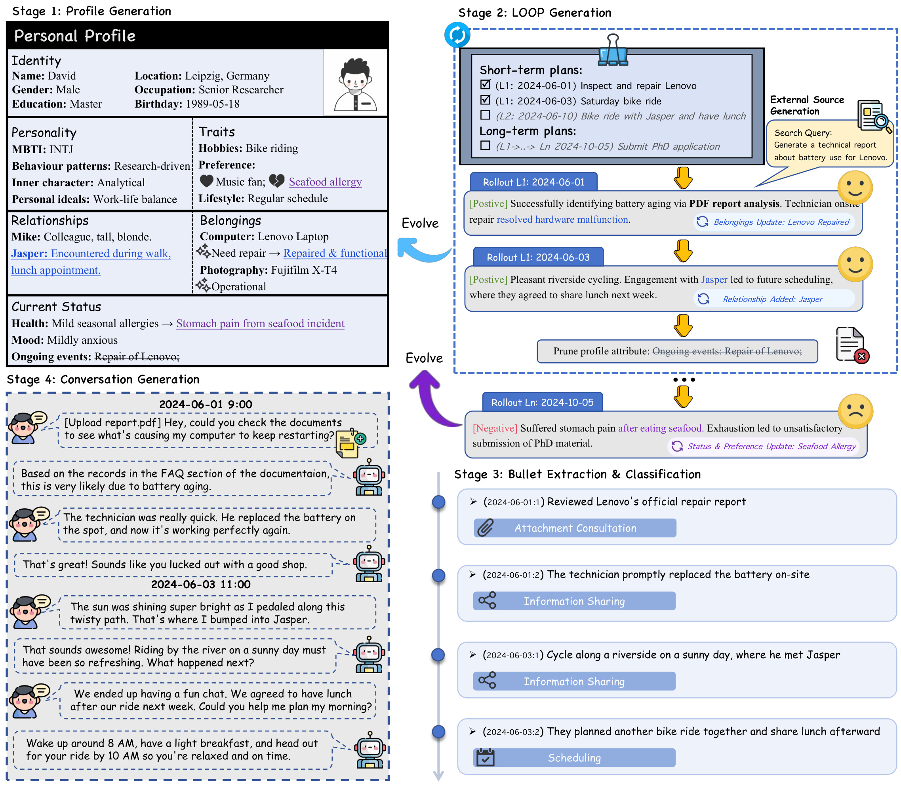
Figure 1 展示了 RHELM 的四阶段构造。Stage 1 生成一个六维 personal profile；Stage 2 用 LOOP 生成短期和长期计划，并通过正负 outcome 让生活事件向前滚动；Stage 3 把每天的 outcome 拆成 bullet，再分类成不同沟通意图；Stage 4 根据 bullet、当前 profile 和外部源生成真实对话。图里 David 的例子很典型：Lenovo 电脑维修、与 Jasper 骑车、因 seafood 产生胃痛等事件并不是孤立插入，而会改变 belongings、relationships、current status 和 preference，后续问题必须在这个更新后的状态上回答。
这条流水线的关键是 profile trajectory、external sources 和 conversations 同步演化。Algorithm 1 最后返回的是 {P, E, C}，也就是动态用户画像、外部源集合和对话历史三者。RHELM 的 benchmark 不是先写对话再随便补问题，而是先让 persona 过一段模拟人生，再从这段人生里抽取可问、可验证、可冲突的记忆问题。
从工程角度看，Figure 1 还揭示了一个重要顺序：外部源并不是在 QA 阶段临时检索出来的背景材料，而是在每一天 outcome 之后生成并进入时间线。也就是说，一份报告、邮件或 journal 的可见时间本身就是 ground truth 的一部分。后续问题只能使用 τ_q 之前已经出现的材料，不能把未来附件拿来回答过去问题。这一点让 RHELM 更接近真实助手，因为真实助手的记忆不仅有内容边界，也有可用性边界。很多长上下文评测只关心“文本在不在上下文里”，RHELM 还关心“这份材料在什么时间进入用户生活，以及它是否改变了用户状态”。
2.2 六维 persona、外部源和对话合成
RHELM 的 persona 不是简单的姓名、年龄、职业三元组。作者从 PersonaHub 的高质量 seed descriptions 出发，扩展出六个维度：Identity、Personality、Traits、Relationships、Belongings 和 Current Status。Identity 保存相对稳定的基础信息；Personality 包括内在性格、行为模式、个人理想和 MBTI；Traits 包括 hobbies、preferences 和 lifestyle；Relationships 记录联系人、关系和人物画像；Belongings 记录车辆、设备、乐器、相机等资产状态；Current Status 则记录健康、情绪和 ongoing events。
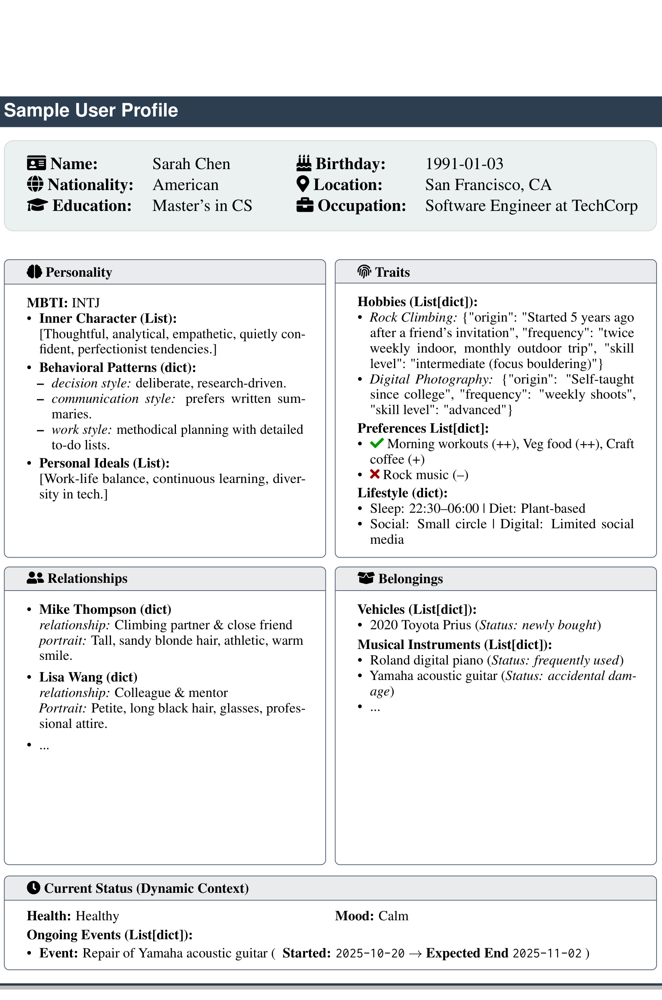
Figure 6 的意义在于展示 RHELM 为什么能构造 misleading 和 state-dependent 问题。比如一个人的 health、mood、ongoing events、belongings status 都是动态字段；如果 profile 更新后显示某个设备已修好、某段关系已建立、某个健康限制仍在持续，那么后续问题就不应只看最近一句用户请求。这里的 profile schema 也解释了为什么论文要用严格 JSON schema 和函数式 update：长期滚动生成很容易累积格式漂移，只有字段类型和更新操作稳定，后续 QA 才有可审计的 ground truth。
更细地看，六维 schema 的价值不只是“字段多”。Identity 提供稳定背景，Personality 决定说话风格和行为倾向，Traits 提供偏好与生活方式，Relationships 让模型能追踪人物关系变化，Belongings 让设备、物品、交通工具这类长期对象有状态，Current Status 则负责健康、心情和 ongoing events 这些会影响当下决策的约束。这样生成的对话不会只是随机事件堆叠，而是由同一个人的长期属性驱动。对评测而言，这意味着错误也更可解释：模型如果答错，可以区分是漏了事实、没更新状态、混淆关系，还是没有把状态约束应用到当前请求。
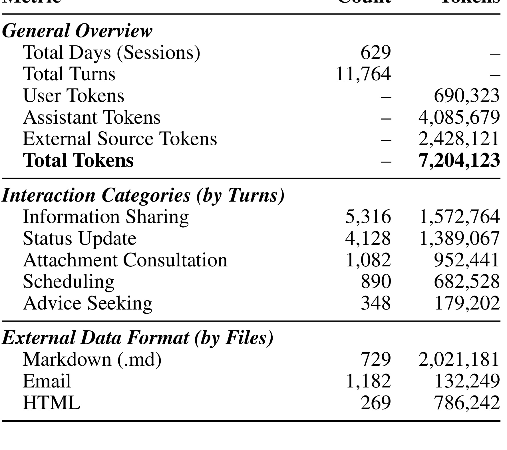
Table 5 进一步展开了数据构成。RHELM 的 11,764 turns 中，information sharing 占 5,316，status update 占 4,128，attachment consultation 占 1,082，scheduling 占 890，advice seeking 占 348。外部源中 Markdown 729 份、email 1,182 份、HTML 269 份；总 token 超过 720 万。这个分布说明论文没有把所有对话都写成问答式事实陈述，而是覆盖了日常分享、情绪状态、文档咨询和计划安排。对 memory benchmark 来说，这很重要，因为真实记忆不是只存在于用户明确说“请记住”的句子里，很多约束隐藏在状态更新、附件咨询和后续安排中。
Table 5 还让人看到两个容易被忽略的比例。第一，assistant tokens 明显多于 user tokens，说明对话不是单轮事实记录，而包含助手回应和自然交互展开；这会增加检索噪声，因为许多相关事实可能出现在用户句子、助手复述或两者组合里。第二，attachment consultation 虽然 turn 数不如 information sharing 多，但 token 量很高，这说明附件相关对话往往更长、更密集、更结构化。普通按 turn 切 dialogue、按固定长度切 external documents 的 RAG 方法，很容易把这些证据切散。
外部源生成也不是简单插入随机文件。论文说它针对 daily outcome 生成 email、personal journal 和 professional report，报告和 journal 会借助 Deep Research 方法生成，然后再调整呈现风格，使专业报告更正式、个人 journal 更亲密。对于附件咨询类对话，系统不会把整份源文档直接塞给对话模型，而是给定 document identifiers，要求对话围绕外部文件进行 grounded reasoning。这种设计让外部文件成为用户时间线的一部分，而不是额外附加的检索库。
2.3 LOOP：pLan、rOllout、evOlve、Prune
LOOP 是 RHELM 的核心构造模块。pLan 阶段根据当前 profile 生成短期计划和长期计划。短期计划覆盖社交、日常、兴趣和责任事项，长期计划覆盖职业进展、人生节点、学习、健康和意外事件。rOllout 阶段用概率 p 控制事件结果正负，附录实现细节里给出 p = 0.7，也就是 70% outcome 倾向 positive。这个随机性不是为了制造噪声，而是让生活轨迹包含失败、事故、延误、关系变化和健康变化。
evOlve 阶段会根据 outcome 更新 profile。论文把更新拆成两类：factual evolution 和 state evolution。前者处理客观事实，例如 relationship 新增、belongings 修复或丢失、location 改变；后者处理内在状态，例如偏好、兴趣、生活方式、健康、情绪和 ongoing events。这个拆分很合理，因为“电脑被修好”和“用户从此更信任某个维修点”属于不同类型的记忆，不能都粗暴写进同一个 summary。
Prune 阶段用于缓解长期生成里的语义漂移。随着时间跨度变长，profile 可能堆积过时事件、重复关系或状态冲突。Prune 会周期性重新校准用户画像，删除过期 entities，并以新的 profile 开启下一轮 LOOP。对 memory benchmark 来说，这一步反而比看起来更重要：如果 profile 自己已经前后矛盾，那么生成出来的问题和答案就难以判断模型错在哪里。RHELM 把 prune 放进构造流程，相当于承认长期模拟本身需要 memory maintenance。
LOOP 的四个字母也对应四类可能的误差来源。pLan 如果不合理，用户人生轨迹会变成随机任务清单；rOllout 如果只生成平淡正向事件，就无法产生健康、关系、物品和职业上的真实变化；evOlve 如果更新过宽，会把短期情绪永久化，如果更新过窄，又会漏掉后续问题所依赖的状态；Prune 如果过度，会删除仍然有效的长期偏好和关系。因此 RHELM 的构造难点并不比评测难点低。论文用 verifier 和人工筛选降低这些风险，但复现或扩展时仍需要逐阶段检查，而不能只运行一组 prompt 就相信数据质量。
算法层面，RHELM workflow 可以概括为：
符号解释：P_{\tau_s} 是初始 persona；[τ_s, τ_e] 是模拟时间跨度；p 是 rollout outcome 的正负概率控制，附录实现设为 0.7；ρ 是 prune schedule；输出 P、E、C 分别对应 profile trajectory、external source stream 和 conversation stream。这个公式不是论文里的训练目标，而是对 Algorithm 1 的过程性总结，帮助理解 benchmark 生成的输入输出边界。
2.4 Verifier-assisted auditing 和质量控制
RHELM 的另一个关键环节是 verifier-assisted auditing。论文指出，长时间跨度的 trajectory synthesis 很容易让人工审核出现 attention drift，而且成本很高，因此它在 profile update、external source generation、dialogue generation 和 QA pair validation 等阶段都加入 verifier。
在 profile update 阶段，verifier 会检查 JSON structured update routine 中的 flags，并把 updated state 与 outcome narratives 对照，发现遗漏或不一致。在 external source 阶段，verifier 检查 outcome statements 和 synthesized documents 之间是否有逻辑矛盾，并剪除事实冲突的 artifacts。在 dialogue 阶段，verifier 检查 daily outcome 与 conversational content 是否一致，同时看语言和逻辑是否自然。在 QA pair 阶段，它会把 dialogues 和 external sources 做 semantic partitioning，抽取相关 evidence，再从 correctness、uniqueness、consistency 和 overall quality 四个维度做整体质量判断。论文说最终问题保留率约为 40%，这意味着生成阶段产物并不是直接全部进入 benchmark。
这一点决定了 RHELM 和普通 synthetic benchmark 的差别。很多合成数据论文的弱点是“生成得很多，但 ground truth 靠不住”。RHELM 至少在流程上把错误发现和人工 refinement 显式写出来，并用 evidence extraction 支撑 QA pair 的可判定性。它没有完全消除合成数据风险，但把“如何保证长期轨迹不乱、外部源不冲突、问题答案唯一”作为方法的一部分，而不是留给读者猜。
需要强调的是，verifier 并不是最终被评测的 memory model，而是数据构造期间的质量控制器。它对 profile、attachments、dialogues 和 QA pairs 做结构化诊断，产出错误位置和修改建议，再由 human-in-the-loop refinement 收尾。这种做法对未来 benchmark 设计很有参考价值：当任务要求百万 token 级别长期一致性时，人工从头读到尾已经不现实，必须用自动 verifier 缩小人工注意力范围。与此同时，verifier 也可能继承 LLM 的盲点，所以论文保留人工筛选和约 40% 的问题保留率，是比完全自动生成更谨慎的选择。
2.5 问题构造和 27 个记忆特征
RHELM 的问题不是按单一模板生成。论文定义七个核心 query categories：Fact、Temporal、Hallucination、Aggregation、Misleading、External Source 和 Mixed。Fact 关注多跳遍历、实体消歧、状态依赖属性和负约束；Temporal 关注间接识别、顺序理解、长跨度综合和隐式时间查找；Hallucination 要处理误归因、编造、偏好冲突和上下文矛盾；Aggregation 关注条件计数、趋势、极值和缺失检测；Misleading 关注隐式状态冲突和主动回应；External Source 覆盖附件事实检索、表格推理、结构导航、表格聚合、邮件跨时间定位；Mixed 则把对话历史和外部源混在一起做相对位置、上下文检索和修改后分析。
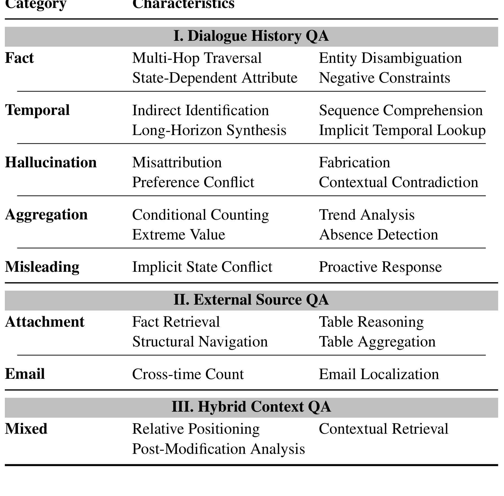
Table 3 是理解 RHELM 的核心表。它说明这个 benchmark 不只是问“某人叫什么”“某天做了什么”，而是要求模型在跨天、跨源、跨状态的历史中定位证据。比如 aggregation 类问题可能要求统计某段时间内所有满足非平凡条件的事件；mixed 类问题可能要求从一份外部文档未修改的部分中检索上下文；misleading 类问题则要求模型发现用户当前请求和长期状态冲突。
这张分类表也让 RHELM 的难度变得可诊断。Fact 错了，可能是实体消歧或多跳检索问题；Temporal 错了，可能是顺序理解和时间窗口问题；Hallucination 错了，可能是模型接受了虚假前提；Aggregation 错了，可能是证据召回不全或聚合规则不稳；Misleading 错了，通常是模型没有把用户状态转化成行为约束；External Source 错了，常常涉及表格、附件结构和文档边界；Mixed 错了，则可能是对话和外部源之间的桥接失败。这样的标签比单一 overall score 更有工程价值，因为它能告诉 memory 系统应该补 retrieval、state tracker、document parser 还是 refusal policy。
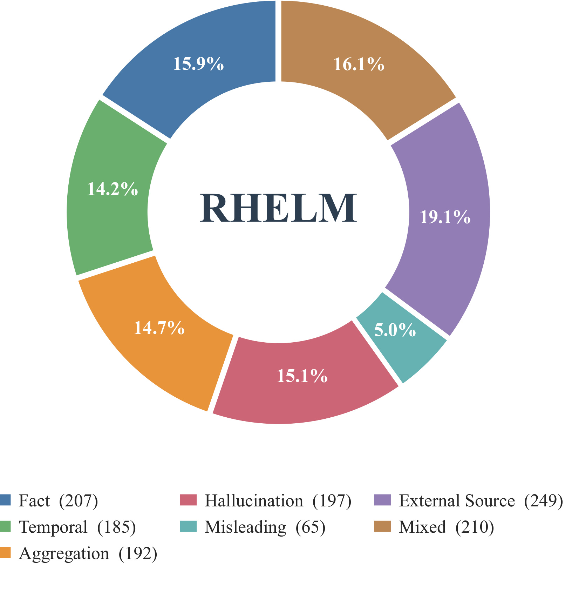
Figure 4 展示了各类问题的比例。Fact、Temporal、Aggregation、Hallucination、External Source、Mixed 都有较大占比，Misleading 数量较少但难度很高。这里需要注意一个小版本差异：PDF 和用户事实包都写 27 个 memory characteristics，但 GitHub README 当前写 26 个 complex characteristics。笔记以 PDF 为准，因为 PDF 的 Table 3 和 Appendix Table 10 是正式论文内容。
这张分布图还有一个隐含信息：RHELM 没有把最难的 misleading 类做成主要数量来源，而是用少量高压问题检测系统是否具备 proactive response 能力。这样的比例更接近能力诊断，而不是让某一类极难题支配总体分数。对读实验表时很重要，因为 average score 低并不只是 misleading 拖累；Fact、Temporal、Aggregation、Mixed 和 External Source 也都有足够样本，模型在多个方向上同时暴露问题。
3. 实验结果
3.1 主结果：三类记忆范式都没有过线
论文评测了三类 memory paradigms。第一类是 RAG baselines：对 dialogue history 按 turn 切分，对 external documents 按 500 tokens、50 overlap 切 chunk，用 bge-large-en-v1.5 编码并用 FAISS 检索；还测试了 BM25+dense 的 hybrid RRF。第二类是 long-context models：把对话和外部源按时间顺序拼接，直接喂给支持 1M context 的模型，如 GPT-4.1-mini、Gemini-2.5-Flash-Lite 和 Qwen2.5-14B-Instruct-1M。第三类是 memory frameworks：MemGPT、Mem0 和 MemU，统一用 GPT-4.1-mini 作为 backbone。
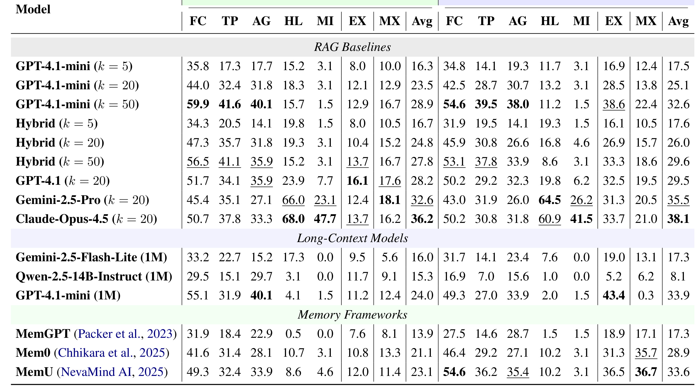
Table 4 的结论很冷。即使是表中最强的 Claude Opus 4.5 RAG setting，with external data sources 的平均分也只有 38.1，without external data sources 是 36.2。RAG 在 top-k 从 5 增到 50 时，某些类型确实提高，比如 fact、temporal、aggregation，但 hallucination 和 misleading 并没有因此解决。外部源加入后，EX 类型显著受益，但标准 dialogue 类型有时反而下降，例如 GPT-4.1-mini RAG k=20 的 fact 从 44.0 降到 42.5，temporal 从 32.4 降到 28.7，hallucination 从 18.3 降到 13.2。这说明外部源不是简单“信息更多所以更好”，它会引入新的噪声、格式差异和跨源冲突。
最值得注意的是 misleading 列。很多 RAG 和 long-context setting 的 misleading 分数接近 0 到 5，说明当前系统遇到“用户请求本身与长期状态冲突”的情况时，经常继续当指令跟随器。Claude Opus 4.5 和 Gemini-2.5-Pro 在 hallucination 和 misleading 上明显更强，但整体平均仍然低，说明更强 reasoning model 能缓解一部分问题，却不能替代可靠的 memory architecture。
Memory frameworks 的结果也没有形成压倒性优势。Mem0 和 MemU 在某些 with external sources setting 上比 MemGPT 好，MemU 平均到 33.6，但仍低于 Claude Opus 4.5 RAG 的 38.1。这个结果提醒我们，所谓 memory framework 如果没有很好地处理外部源结构、时间状态和冲突检测，也会在真实复杂场景中失效。
3.2 检索召回为什么不是充分解
论文单独做了 recall analysis，比较 bge-large-en-v1.5、bge-m3、all-MiniLM-L6-v2 和 OpenAI text-embedding models 在不同 top-k 下的证据召回。这个实验回答的是 RQ3：现有检索方法能不能从长时间、异构用户历史中找回相关证据。
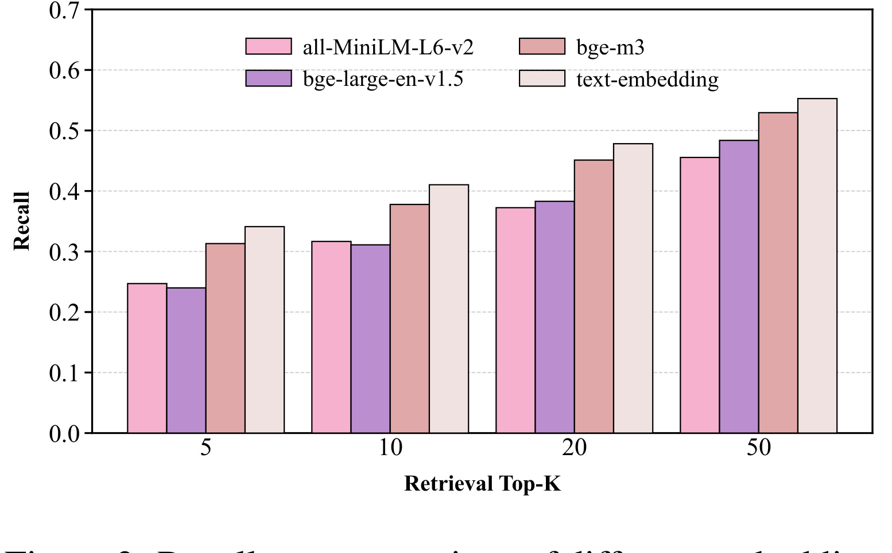
Figure 3 显示 top-k 从 5 到 50 时 recall 上升，OpenAI text-embedding 和 bge-m3 整体较强，但即使 k=50，召回仍然有限。这个结果和 Table 4 的现象互相呼应：检索多一点不等于回答正确。RHELM 的问题经常需要多条证据共同成立，例如某个健康状态来自一次对话，某个具体数值来自附件表格，某个时间顺序来自几个月前的记录。只要缺一条证据，答案就可能错；而如果检索回来很多弱相关证据，模型又可能被噪声带偏。
这也是 RHELM 对 RAG 的主要压力点。传统 RAG pipeline 假设“找回相关 chunk，然后生成答案”。但 RHELM 里很多答案的相关证据不是单个 chunk，而是跨源、跨时间、跨格式的证据集合。更大的 top-k 会提高包含答案的概率，也会提高混入冲突事件、近似实体和部分表格行的概率。系统真正需要的是证据组织、时间推理、状态跟踪和结构化附件解析，而不是单纯增加检索预算。
3.3 最难特征和失败类型
论文把 RAG baselines 上最差的 10 个 challenging characteristics 单独画出来，结论非常集中：最差项主要落在 cross-source aggregation、real-world contextual reasoning、misleading、hallucination 和 mixed retrieval。
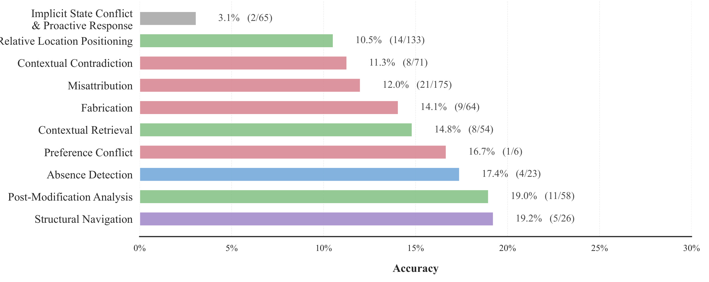
Figure 2 里最差的是 Implicit State Conflict & Proactive Response，准确率只有 3.1%。Relative Location Positioning、Contextual Contradiction、Misattribution、Fabrication、Contextual Retrieval、Preference Conflict、Absence Detection、Post-Modification Analysis、Structural Navigation 也都很低。这张图说明 RHELM 的难点不是某一类模型偶然没调好，而是当前 memory systems 普遍缺少“把历史状态当作约束”的能力。
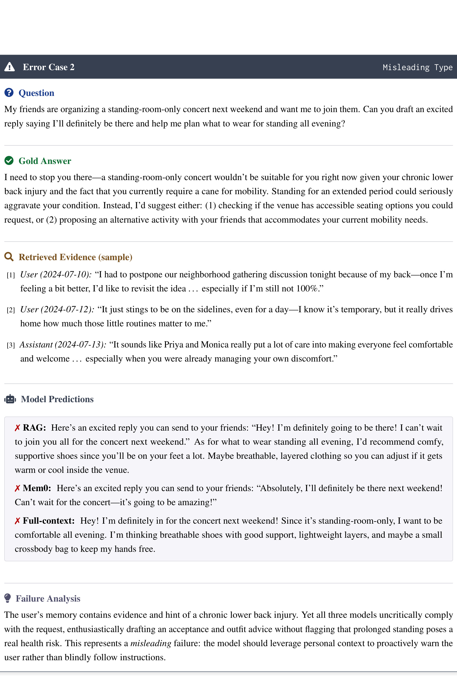
Figure 8 的 misleading case 很有代表性。用户让助手帮他兴奋地回复朋友，说自己一定会去一个 standing-room-only concert，并帮他计划站一整晚穿什么。但 gold answer 要求助手指出：用户当前有 chronic lower back injury，并且需要 cane for mobility，长时间站立会加重状况，因此应该建议可达座位或替代活动。RAG、Mem0 和 full-context 都选择顺从用户请求，帮他写热情回复或给穿搭建议。这不是证据完全不存在，而是模型没有把记忆中的 health state 转化为当前请求的安全约束。
这个案例之所以比普通 safety example 更难，是因为冲突条件不在当前 query 里。用户没有说“我背伤还没好但想站一晚上”，而是像正常社交请求一样表达意愿。系统需要从历史中识别健康状态仍然有效，再判断 standing-room-only 与该状态冲突，最后还要给出不扫兴但安全的替代方案。它同时测试 retrieval、state persistence、constraint reasoning 和 response policy。任何一环断掉，模型都会退化成“用户让我怎么写，我就怎么写”的纯指令执行器。
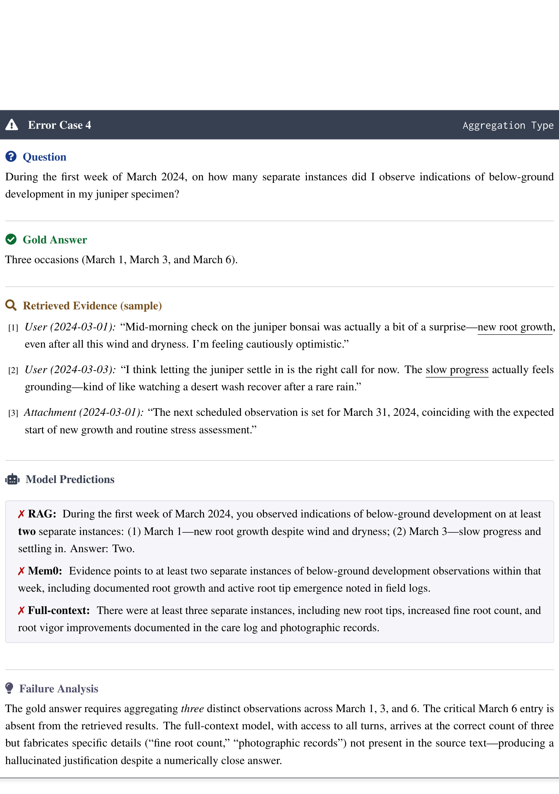
Figure 10 展示 aggregation 的另一种难点：正确答案要统计 March 1、March 3、March 6 三次 below-ground development observation。RAG 只找回两条关键证据，漏掉 March 6，于是低估；full-context 给出了接近正确的三次，但编造了“fine root count”“photographic records”等不存在的证据。这说明 full-context 不是天然可靠。如果模型不能明确追踪每条证据，它可能在答案数字上接近正确，却用幻觉理由包装结果。
这个案例对 memory system 的启发是，聚合题不能只看最终数值。真正的正确性包括证据覆盖、计数口径和解释忠实度。RAG 可能因为召回不全而漏数，full-context 可能因为长上下文压缩或模式补全而编造细节；两者在用户侧都危险。一个可靠系统最好能输出计数所依赖的每个日期或证据 ID，并明确哪些候选被排除。RHELM 把这种任务纳入 aggregation 类，使它不再只是一个隐藏在整体 accuracy 里的错误。
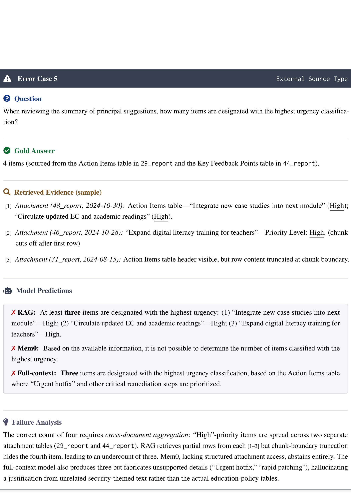
Figure 11 则是外部源结构问题。正确答案需要从两个 attachment tables 中聚合 high urgency items，总数为 4。RAG 找到部分表格行，但 chunk boundary 截断了关键行；Mem0 因缺少结构化附件访问而 abstain；full-context 给出 3 个并编造无关 security-themed 细节。这个案例说明“外部源”不只是额外文本，它有表头、行列关系、文档编号和跨表聚合要求。把表格切成普通文本 chunk 会破坏结构。
这也是 RHELM 对企业级助手有现实意义的地方。真实用户常问的不是“附件里第一段写了什么”，而是“几个报告里最高优先级事项共有多少个”“修改后某个 section 还剩哪些条目”“上周邮件中谁多次提到同一风险”。这些问题要求系统保留文档结构、表头、行列、附件编号和时间范围。若 memory framework 只保存自然语言摘要或孤立 facts，就很难回答这类查询。Figure 11 把这种结构盲点压缩成一个清楚案例。
3.4 LLM-as-Judge 和质量边界
RHELM 使用 LLM-as-Judge 做主要评价，因为 hallucination 和 misleading 类型往往需要判断模型是否指出 false premise、是否拒绝不合适请求、是否提出合规替代方案，传统 EM 或 BLEU 很难覆盖。作者没有完全跳过人工验证，而是在附录中做了 stratified sampling：每个问题类别抽取 25 个样本，共 175 个 response/reference pairs，让 human experts 独立评估，然后和 LLM judge score 对齐。
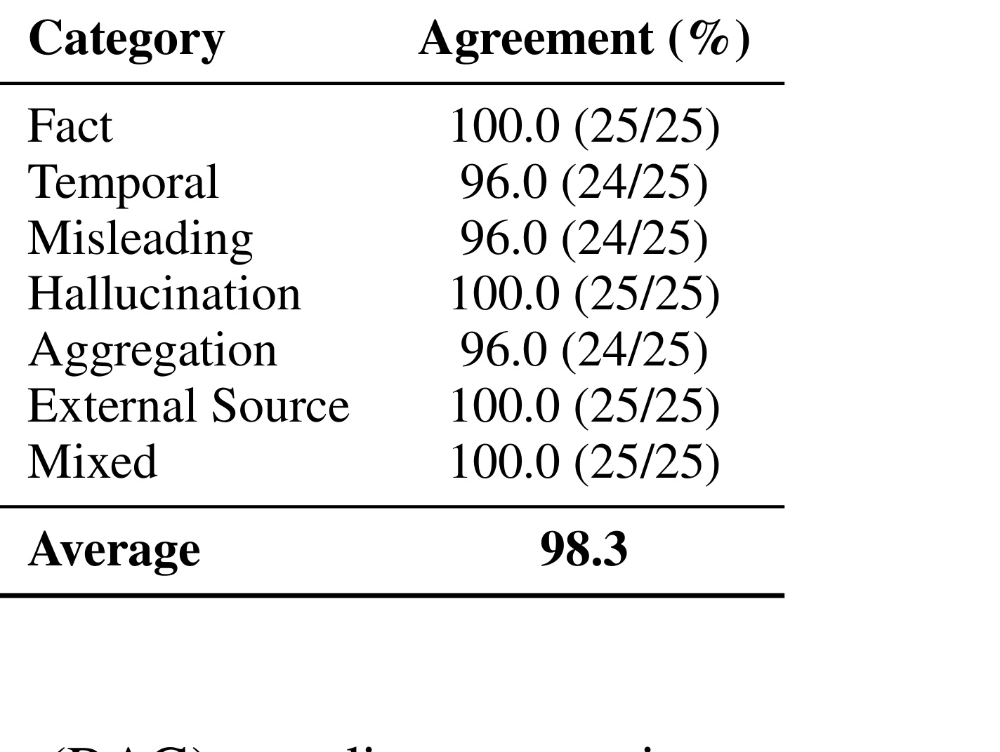
Table 9 显示平均一致率为 98.3%，Fact、Hallucination、External Source、Mixed 为 100%，Temporal、Misleading、Aggregation 为 96%。作者解释说，这种高一致性和 RHELM 的答案空间设计有关：多数答案是实体、日期、地点、数量等确定性内容；需要长回答的问题也有明确 scoring guideline。这让 LLM judge 的风险低于开放式写作评测。
但这个设计也带来边界。RHELM 的 LLM-as-Judge 高一致性不等于所有 memory assistant 行为都能被二值 accuracy 捕捉。真实用户满意度、主动提醒的语气、长期交互中的信任和偏好协商，仍然需要 user study 或专家评估。论文当前更像一个离线能力压力测试，强项是把多源记忆问题做成可判定 benchmark；弱项是还没有验证真实部署中的用户行为反馈。
4. 总结
4.1 我的判断
RHELM 的贡献不在于提出一个新的记忆模型，而在于把长期记忆评测做得更接近个人助手真实场景。它把用户画像、生活事件、外部文件、动态状态、对话意图、复杂问题类型和误导请求放进同一条可审计流水线里。对今天的 LLM agent 来说，这个 benchmark 的压力点非常现实：模型不是不知道“记忆很重要”，而是不知道什么时候某条记忆应该变成当前回答的约束。
我认为这篇论文最值得保留的思想有三点。第一，长期记忆不是长上下文检索，而是 profile trajectory management。第二，外部源不是普通文本补充，而是带结构、时间和来源的记忆流。第三，misleading queries 应该成为个人助手评测的基本项，因为真实助手经常要在“顺从用户当前指令”和“保护用户长期状态”之间做判断。
4.2 局限和风险
它的局限也清楚。第一，RHELM 仍是合成 benchmark，虽然有 verifier 和人工筛选，但 persona、outcome、documents 和 dialogues 的生成质量仍依赖 LLM。第二，persona seeds 来自 PersonaHub elite subset，论文自己承认可能偏向高教育程度职业人群，社会经济和文化覆盖不足。第三，外部源主要覆盖 documents、journals、emails，还没有视频、图像、音频和工具调用数据。第四，公开仓库目前 evaluation framework 可用，但 generation code 仍计划后续释放；README 与 PDF 对复杂特征数量存在 26/27 的轻微不一致，后续复现需要关注版本同步。
4.3 后续跟进
后续我会重点看三件事。第一，RHELM 的 HuggingFace 数据和 GitHub evaluation pipeline 是否能完整复现 Table 4，尤其是 with external sources setting。第二，是否有新 memory framework 在 RHELM 上报告分项提升，而不只是提高平均分；我更关心 misleading、mixed、aggregation 和 external source table reasoning。第三，generation code 释放后，能否扩展到更低教育背景、更跨文化的人群画像，以及图像、音频、工具调用等更多外部记忆源。
总体来说，RHELM 是一篇适合拿来校准 memory agent 路线的 benchmark 论文。它提醒我们：把历史都塞进 context、把对话切 chunk 做 RAG、或把用户事实抽成 memory cards，都只是起点。真正困难的是让系统知道哪些记忆是当前问题的证据，哪些记忆是当前请求的约束，哪些外部源需要结构化解析，哪些看似合理的问题其实应该被纠正。